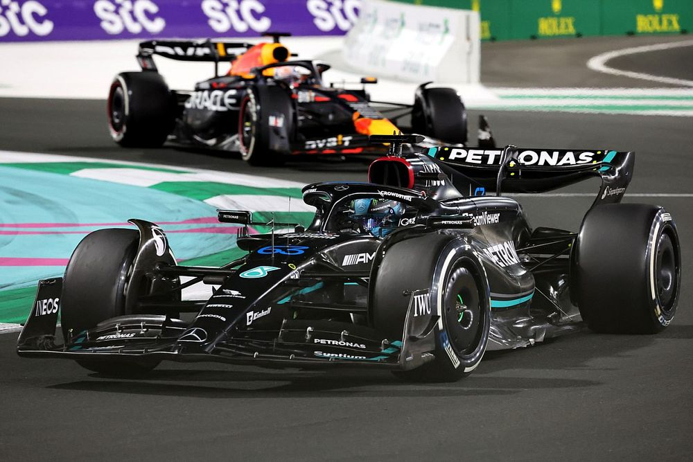

A Young Aspiring Web Developer and User Interface Designer
KDramas vs CDramas
September 10, 2023 by Mia Hill
Korean Dramas tend to focus more on visuals, music and chemistry. KDramas tends
to be shorter than chinese dramas with episodes mostly range from 16 - 32.
The cinematology and overall production has a higher quality. Korean dramas are usually
1 hour long or sometimes 1 hour and 20 minutes. Korean dramas traditionally follow the
live shooting method which means the episodes are still being filmed whilst the drama is on air.
Korean dramas have a variety of genres from romance, thriller, historical, slice of life, medical, etc.
The most popular genre of KDrama is romance. Some popular KDramas
include "Goblin", "Her Private Life", "Weight Lifting Fairy Kim Bok Joo", "Sky Castle",
"Crash Landing On You", "It is Okay Not to Be Okay", "Moving" and "Vincenzo".
My personal favourite Kdramas inlcude "Alchemy of Souls", "While You Were Sleeping",
"The Glory", "Doom at Your Service", "Doctor John", "The Legend of the Blue Sea", "True Beauty"
"Penthouse" and "W: Two Worlds".
Chinese Dramas tend to focus more on the story. Mostly longer episodes can range
up to 60 or more episodes. Many different genres of dramas: modern, historical, etc.
The most popular CDrama genre is historical. A lot of dramas are available on Youtube
with subtitles. All Chinese dramas are pre produced.This is mostly because China has
stricter broadcasting regulations. So the networks want to ensure a drama is appropriate
before it is released.Some popular CDramas include "The Untamed", "Eternal Love",
"Nirvana in Fire" , "The Kings Woman" and "Love and Redemption". My personal favourite CDramas
include "Fall in Love", "Falling Into Your Smile", "My Lethal Man", "Go Ahead"
"Love Between Fairy and Devil" and "Back from the Brink".
My Favourite Sport
September 29, 2023 by Mia Hill

Formula 1 also known as F1 is the highest class of international racing for open-wheel
single-seater formularacing cars sanctioned by the Federation Internationale de I'Automobile(FIA).
The first F1 race was held in 1950 at Silverstone Circuit in the United Kingdom. Formula 1 season
consists of a series of races known as Grands Prix that take place in multiple countries and continents
around the world on either purpose-built circuits or closed public roads. A point system is used at Grands
Prix to determine two annual World Championships: one for the drivers, and one for the constructors(the teams).
A grand prix weekend is 3 days regualr weekends includes 3 practice sessions, qualifying and the race but on
sprint weekends it includes 1 practice session, qualifying, sprint shoot-out, sprint and the race. Qualifying
and sprint shoot-out includes 3 knockout rounds with the drivers ranked based on their fastest lap around
the circuit with the results forming the grid for the race and sprint.
Currently there are ten constructors with each constructor having two drivers. The constructors and drivers in F1
2023 Max Verstappen and Sergio Perez for Red Bull, Lewis Hamilton and George Russell
for Mercedes, Charles Leclerc and Carlos Sainz Jr. for Ferrari, Fernando Alonso and Lance Stroll for
Aston Martin, Lando Norris and Oscar Piastri for McLaren, Pierre Gasly and Esteban Ocon for Alpine,
Alexander Albon and Logan Sargeant for Williams, Kevin Magnussen and Nico Hulkenberg for Haas, Valterri Bottas
and Zhou Guanyu for Alfa Romeo and Yuki Tsunoda and Daniel Ricciardo for AlphaTauri. Last year constructor
winner was Red Bull and driver winner was Max Verstappen. The 2023 F1 Season started on March 3rd in Bahrain
and will end on November 26 in Abu Dhabi. Some popular circuits include Circuit de Monaco in Monaco, Silverstone
in Great Britain, Autodromo Nazionale di Monza in Italy and Circuit de Spa-Francorchamps in Belgium.